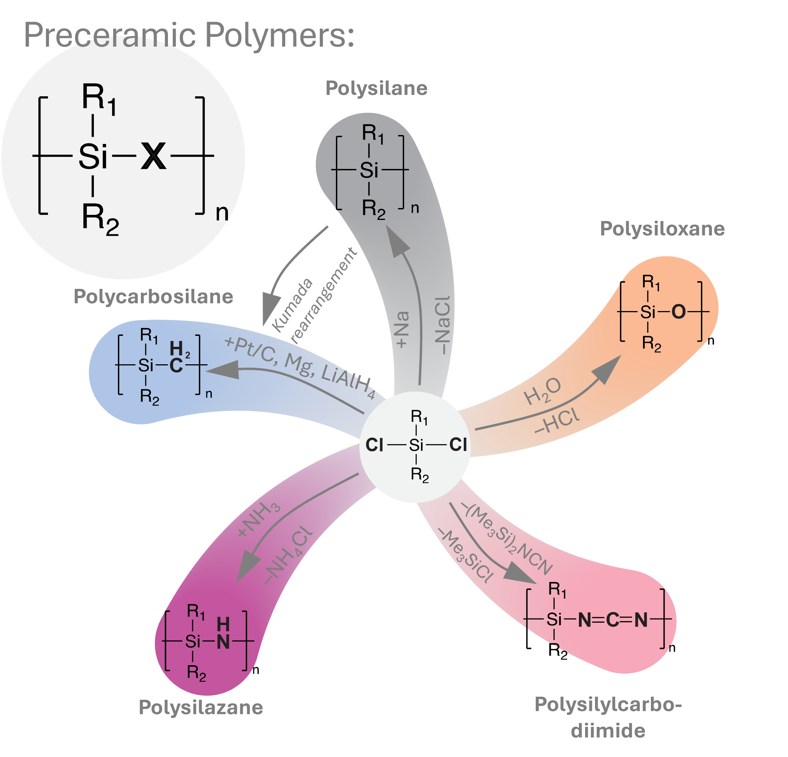
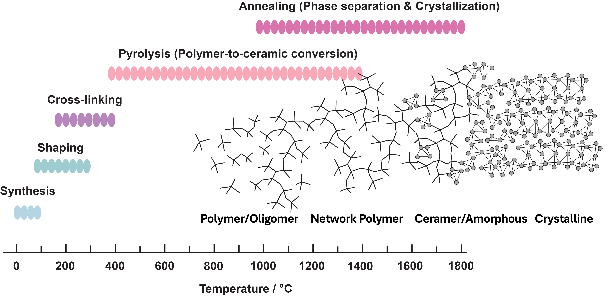
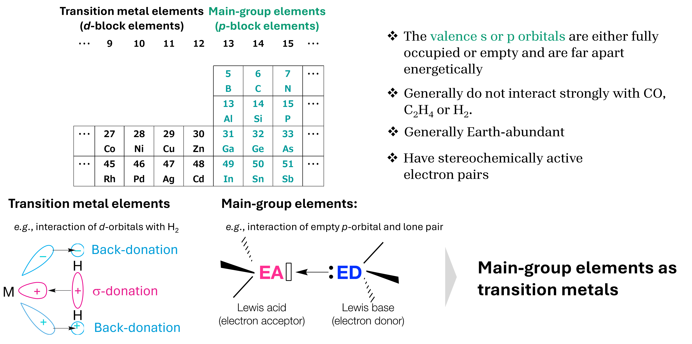
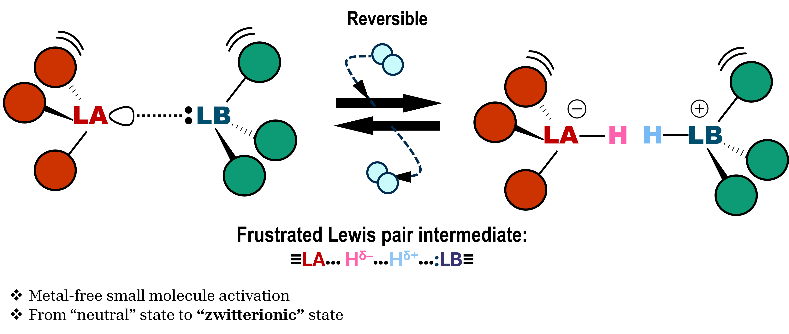
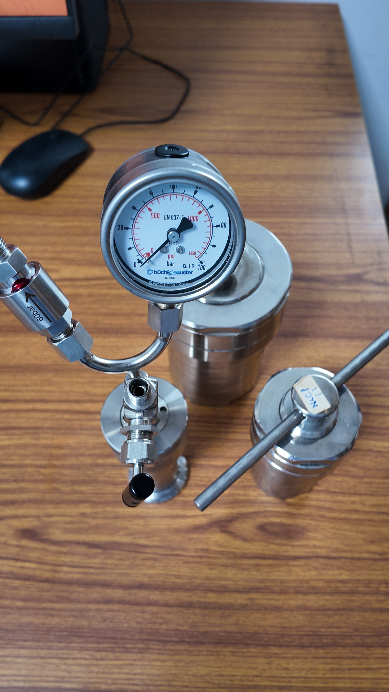
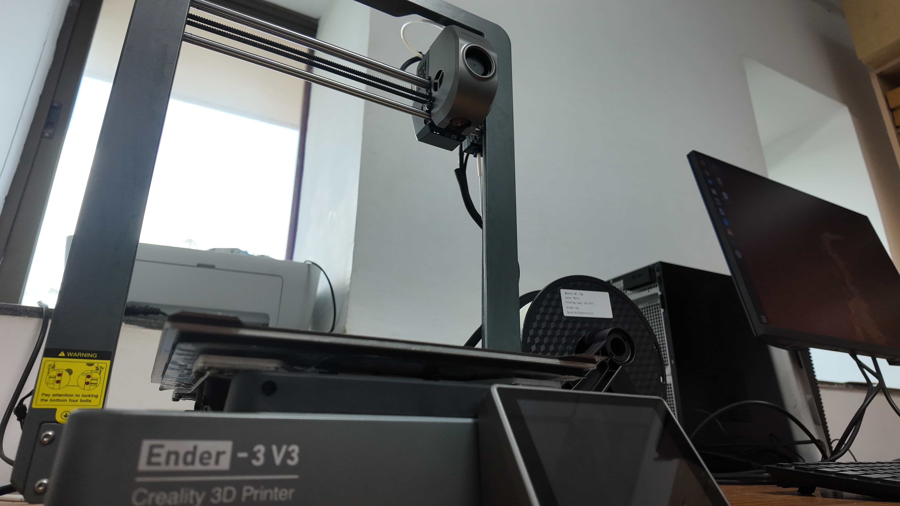

Research
Our research centers on Polymer-derived Ceramics (PDCs) as a platform for elemental strategy–driven materials design. Molecularly engineered precursors are converted into non-oxide ceramic networks through controlled thermal processing. By correlating precursor chemistry, network evolution, and surface functionality, we examine how composition and bonding environments determine structure–reactivity relationships.
Particular emphasis is placed on reactivity control through deliberate incorporation of main-group elements and modulation of Lewis acidic/basic motifs formed during conversion. This framework also considers processing efficiency and resource-conscious materials development by improving functional yield from precursors and minimizing unnecessary high-temperature penalties.
Si-based Precursors and the PDC Route

Si-based molecular precursors (e.g., polysilazanes, polysiloxanes, carbosilanes) enable synthesis of non-oxide ceramics such as SiC, Si3N4, and SiCN. The PDC route allows molecular-level homogeneity and compositional flexibility beyond conventional powder processing.
Polymer-to-Ceramic Conversion

During thermal treatment, the precursor undergoes cross-linking, pyrolysis, and structural rearrangement. The transition from an organic polymer network to an amorphous ceramic matrix, followed by phase separation and crystallization at elevated temperatures, determines the final microstructure.
Main-group Chemistry in PDC Design

Main-group chemistry underpins elemental strategy in PDC systems. Incorporation of p-block elements (B, Al, P, Si) tailors coordination geometry, bonding polarity, and network connectivity at the precursor level.
Modulation of Lewis acidity and basicity enables controlled evolution of reactive motifs during polymer-to-ceramic conversion. Heteroatom distribution and thermal history influence bond rearrangement, structural stabilization, and the emergence of surface-active sites relevant to small-molecule interactions.
This approach links precursor design to reactivity control and processing efficiency, enabling systematic investigation of composition–structure– function relationships in non-oxide ceramic materials.
Frustrated Lewis Pair (FLP) Concept

Spatially separated Lewis acid (LA) and Lewis base (LB) sites formed within amorphous ceramic matrices can cooperatively interact with small molecules such as H2 and CO2. We investigate how such motifs emerge during conversion and how their stability and accessibility depend on composition and nano-confinement.
Porous Ceramics and Two-Dimensional Materials
Controlled phase separation and framework formation enable porous and layered architectures. These systems provide accessible reactive environments for studying adsorption thermodynamics, diffusion behavior, and structure-dependent reactivity.
Facilities and Laboratory
Processing Laboratory (KCB207)
The Processing Laboratory (KCB207), co-managed with Prof. Ravi Kumar, supports precursor synthesis, polymer processing, shaping, and high-temperature ceramic conversion.
PreCAM Lab (To Be Proposed)
- Advanced Ceramic Synthesis (Non-oxide Ceramics)
- In-situ / Operando Characterization
- Electronic structure analysis using Density Functional Theory (DFT)
The proposed PreCAM Lab integrates precursor chemistry, controlled ceramic conversion, and real-time structural analysis under reactive environments to evaluate composition–structure–reactivity relationships.
Available Facilities

Intel Core i9-12900 (16 cores, 24 threads)
128 GB DDR5 (32 × 4)
PW-DFT calculations available via SSH

Hydrothermal / Solvothermal synthesis
Hydrogenation reactions

Jigs for chemical synthesis
In situ measurement fixtures (PETG / ABS)
Ceramic printing (planned)